3．函数的展开
17世纪后期和18世纪，摆在数学家面前的问题之一是函数表的插值。为了适应航海、天文学和地理学的进展，要求三角函数、对数函数和航海表的插值有较大的精确度。插值（这个词是沃利斯的）的常用方法叫线性插值法，因为它假设了在两个已知值之间的区间中，函数是自变量的线性函数。然而，问题中的函数往往是非线性的，因而数学家感到需要有一种较好的插值方法。
我们将要叙述的方法是布里格斯（Henry Briggs）在他的《对数的算术》（Arithmetica Logarithmica，1624）中引进的，不过关键的公式是由詹姆斯·格雷戈里在他1670年11月23日给柯林斯的信（滕博尔，《通信》，1，45-48）中给出，并且牛顿也独立地给出过。牛顿的工作出现在《原理》第三卷的引理5和《微分法》（Methodus Differentialis）中，后者虽然出版于1711年，但却是1676年写成的。用的方法叫做有限差方法，这是有限差计算的第一个重大的结果。
假设f（x）是一个函数，它在
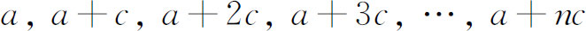
上的值已知。令
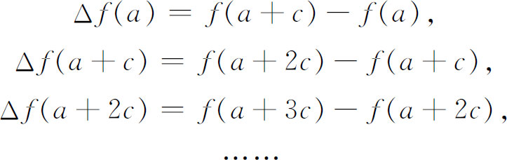
进一步令
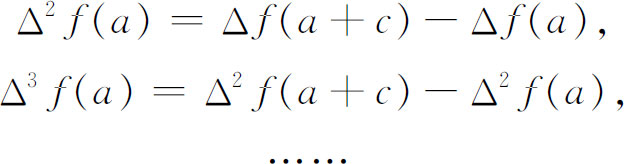
那么格雷戈里-牛顿公式可以叙述为
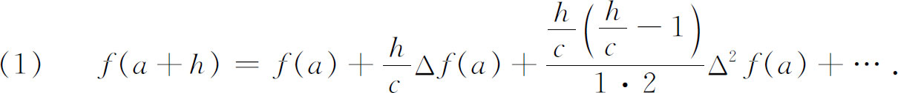
牛顿粗略地给出了一个证明，而詹姆斯·格雷戈里却没有。
为了计算f（x）在已知值之间的任一x处的值，只需让h等于x-a。这样计算出来的值并不一定是函数的真值；公式计算出来的是h的一个多项式的值，这个多项式在特殊点
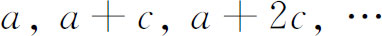
的值和函数的真值相同。格雷戈里-牛顿公式还可用来逼近积分。给定一个函数，譬如说g（x）要求积分，或者说要找相应曲线下的面积。我们可用g（x）的值得到
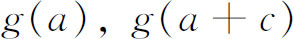
，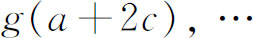
以及它们的差分和高阶差分；把这些值代到（1）中，那么（1）就给出了一个逼近g（x）的多项式。于是，正如牛顿所指出的，由于多项式是很容易积分的，就得到了g（x）的所求积分的一个逼近。詹姆斯·格雷戈里还把（1）应用于函数
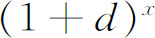
。他知道这个函数在x＝0，1，2，3，…上的值。因此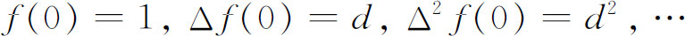
。这样，在（1）中，让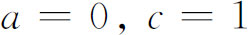
和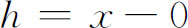
，应用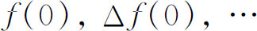
的值，他得到了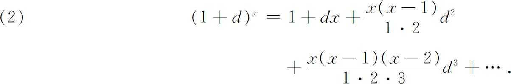
这样，对于一般的x，詹姆斯·格雷戈里得到了二项式的展开。
格雷戈里-牛顿内插公式由泰勒发展成一个把函数展成无穷级数的最有力的方法。二项式定理、有理函数的长除法和待定系数法，都是有局限性的方法。泰勒在他研究有限差计算的第一本出版物《增量法及其逆》（Methodus Incrementorum Directa et Inversa，1715）中，推导出他在1712年曾经叙述过的定理，这定理至今仍用他的名字命名。他顺便称赞了牛顿，却没有提到莱布尼茨1673年在有限差方面的工作，虽然泰勒是知道这些工作的。泰勒定理在1670年就已经为詹姆斯·格雷戈里所知，大概稍后又为莱布尼茨独立地发现过；然而，这两个人都没有发表它。实际上，约翰·伯努利确曾于1694年在《教师学报》上发表了相同的结果；虽然泰勒知道这个结果，但并没有引证过它。他自己的“证明”是不一样的。他所做的相当于在格雷戈里-牛顿公式中让c变成Δx。这样一来，例如（1）的右边第三项就变成
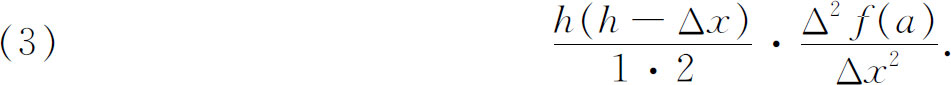
泰勒下结论说，当Δx＝0时，这一项就变成
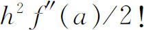
，从而整个格雷戈里-牛顿公式变成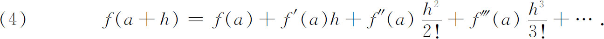
当然，泰勒的方法是不严密的，他也没有考虑收敛问题。
泰勒的定理在a＝0时就是现在所谓的麦克劳林定理。麦克劳林继承詹姆斯·格雷戈里任爱丁堡的教授，在他的《流数论》（1742）中给出了这个特殊情形，并说明这只是泰勒的结果的一个特殊情形。然而，历史上却把它作为一个独立的定理而归功于麦克劳林。附带地说，斯特林在1717年对代数函数，以及在他1730年的《微分法》（Methodus Differentialis）中对一般函数，也给出了这个特殊情形。
麦克劳林是用待定系数法证明他的结果的。他进行如下证明。
令
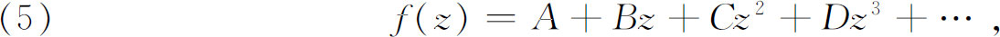
那么
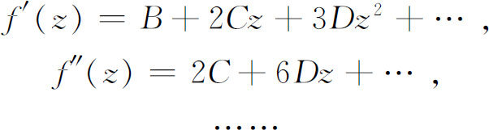
在每个等式中令z＝0，就定出A，B，C，…。他并没有为收敛问题担心，而直接去应用结果。